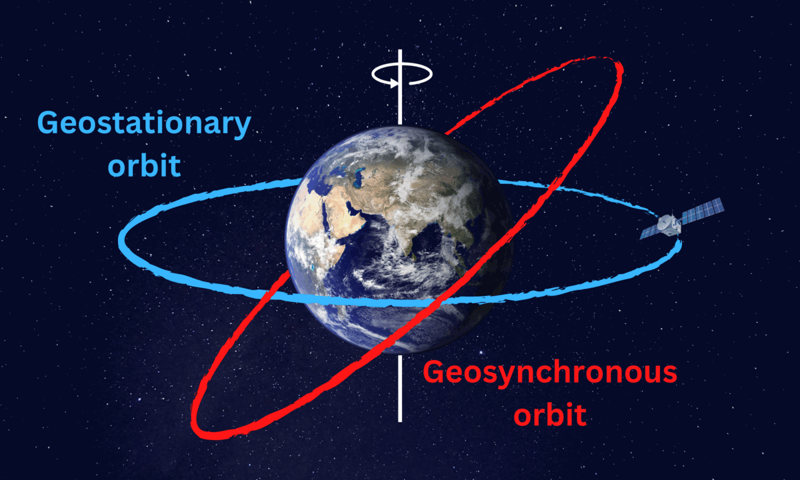
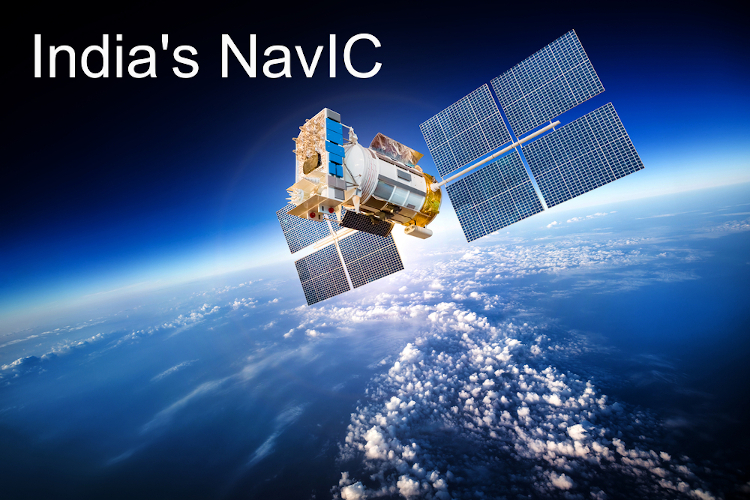

Welcome to SCIENCE Project page
| SCIENCE PROJECT |
|
India's Satellites: Helping the Nation from Space
India has made significant strides in satellite technology, developing powerful satellites like GSAT and NAVIC.
GSAT (Geostationary Satellite)
Purpose: Communication, TV broadcasting, weather forecasting. Weather Prediction: Monitors weather patterns for accurate forecasts. Disaster Management: Provides communication and helps assess damage.
NAVIC (Navigation with Indian Constellation)
Purpose: Navigation and positioning. Navigation: Provides accurate location information across India. Disaster Management: Helps locate people and guide rescue teams.
How these satellites help:
Improved Weather Forecasts: Helps in planning and preparation. Efficient Navigation: Makes travel more reliable. Effective Disaster Response: Saves lives and minimizes damage.
|

GSAT-Geostationary Satellite

NAVIC-Navigation with Indian Constellation
|